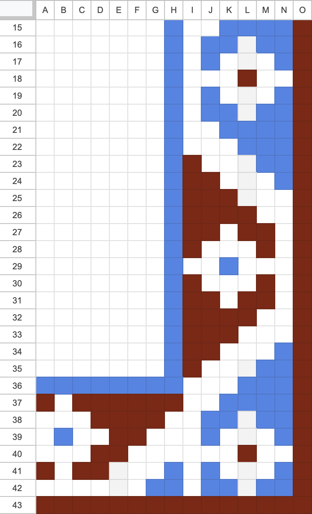
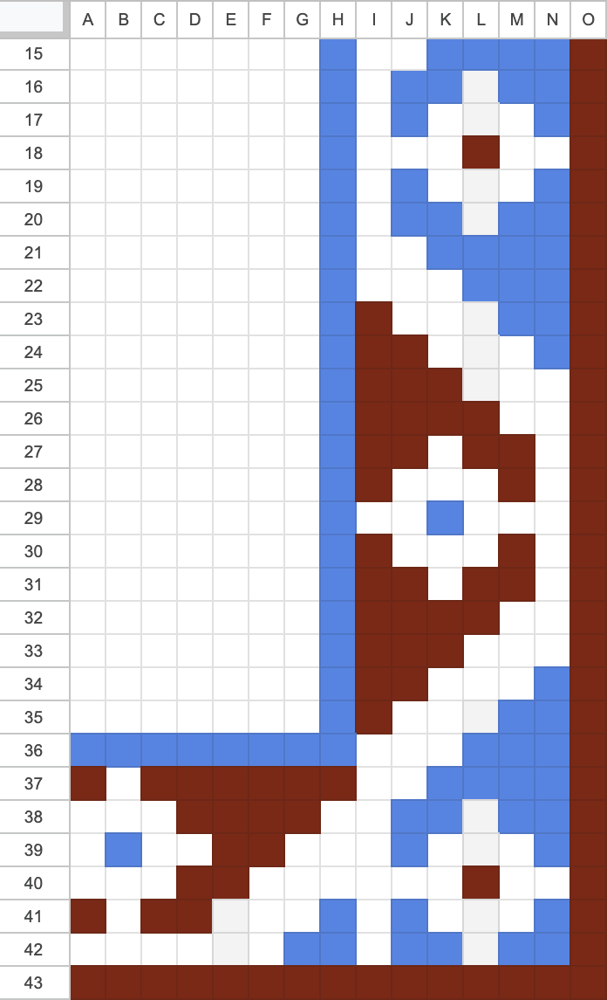

Beaded Textiles

One of my first introductions to weaving was a small bead loom.
I made this small beaded purse in 2002, when I was 10 or 11 years old. I would draw patterns in my graph paper notebook that I could translate into a beaded array.
Recreation of graph paper using google sheets, 2024

The relationship between pixels and beads/fabric/weaving continues to fascinate me and I've picked up a bead loom again recently.
I've also been cataloging decorative tile around my neighborhood in Seattle for a future project, maybe. These patterns change every few blocks, and I haven't found an explanation as to who decided the pattern or why they change.


 
